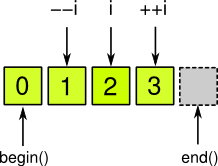
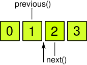

Qt предоставляет свои реализации строк, контейнеров и алгоритмов в качестве упрощенной кроссплатформенной альтернативы для STL
Как и в STL, контейнеры Qt используют шаблоны C++ и позволяют хранить элементы нужного типа. Например, QLinkedList<T> – шаблон связного списка; если требуется связный список целых чисел, то используется QLinkedList<int>.
Для контейнеров применяется неявное разделение памяти. Передача контейнеров в виде аргументов и их возврат не связаны с затратами, так как копия будет создаваться лишь при необходимости изменения одного из объектов:
QList<T> list1;
QList<T> list2;
list1 << a << b << c; // элементы a, b, c заносятся в list1
list2 = list1; // содержимое списков совпадает
list2[0] = d; // теперь list1 копируется;
// list2 изменен, но не list1
По возможности, лучше передавать const-ссылки, так как в этом случае изменений гарантированно не будет.
У всех контейнеров есть некоторые общие методы:
int size() const; // число элементов
void clear(); // удалить все элементы
bool isEmpty() const; // true, если size() == 0
Также везде перегружены операторы сравнения == и !=. Подразумевается, что для типа элементов будет перегружен оператор ==. Контейнеры с последовательным хранением элементов сравниваются с учетом порядка, остальные контейнеры порядок не учитывают.
2. Контейнеры с последовательным хранением элементов
Для начала рассмотрим контейнеры QList<T>, QVector<T> и QLinkedList<T>.
Для добавления элементов к такому контейнеру либо для объединения контейнеров можно использовать операторы +, +=, <<:
QList<int> xs, ys, zs, us;
// (Работает аналогично для QVector и QLinkedList.)
xs << 1 << 2 << 3;
// xs = (1,2,3)
ys += 1;
ys += 2;
ys += 3;
// ys = (1,2,3)
zs = xs + ys;
// zs = (1,2,3,1,2,3)
us << xs << ys << zs;
// us = (1,2,3,1,2,3,1,2,3,1,2,3)
В этих контейнерах выделяются первый и последний элементы. Ссылки на них можно получить при помощи first() и last():
T& first();
const T& first() const;
T& last();
const T& last() const;
(Для совместимости с STL поддерживаются также имена методов front() и back().)
Прежде чем вызывать эти методы, убедитесь, что контейнер не пустой.
Также можно сверить значение первого или последнего элемента:
bool startsWith (const T& val) const;
bool endsWith (const T& val) const;
Поиск элементов:
bool contains (const T& val) const; // содержится ли val в контейнере?
int count (const T& val) const; // количество вхождений
Добавление и удаление:
void prepend (const T& val); // добавить val в начало
void push_front (const T& val); // то же самое
void append (const T& val); // добавить val в конец
void push_back (const T& val); // то же самое
void pop_front(); // удалить первый элемент
void pop_back(); // удалить последний элемент
Для вставки и удаления используются итераторы. Пока мы только перечислим соответствующие методы, но если вы не знаете, что такое итераторы и как они работают, то подробные объяснения содержатся в последнем разделе.
iterator insert (iterator before, const T& val);
// вставить перед позицией before,
// вернуть итератор, указывающий на вставленное значение
iterator erase (iterator pos);
// удалить элемент в позиции pos,
// вернуть итератор, указывающий на следующий элемент
iterator erase (iterator begin, iterator end);
// удалить элементы в интервале [begin, end) (исключая end),
// вернуть итератор, указывающий на end
Далее будут рассмотрены различия между QList<T>, QVector<T> и QLinkedList<T>.
2.1. Контейнеры с доступом по индексу
QList<T> и QVector<T> используют доступ по индексу за постоянное время O(1). Как и в массивах C++, элементы нумеруются с 0.
Доступ по индексу:
const T& at (int i) const;
T& operator[] (int i);
const T& operator[] (int i) const;
T value (int i) const;
T value (int i, const T& defaultValue) const;
Замена значения по индексу:
void replace (int i, const T& val)
При обращении к элементам по индексу проверяйте, что индекс лежит в интервале [0, size()).
Поиск индекса:
int indexOf (const T& val, int from = 0) const;
// индекс первого вхождения val, начиная с from;
// -1, если элемент не найден
int lastIndexOf (const T& val, int from = -1) const;
// индекс последнего вхождения val, начиная с from
// (поиск в обратном порядке, при from = -1 – с конца);
// -1, если элемент не найден
Вставка в данной позиции:
void insert (int i, const T& val);
Если нужно копировать n элементов из середины, начиная с позиции pos, то используется mid (pos,n). При n = -1 элементы копируются до конца:
QList<T> mid (int pos, int length = -1) const;
QVector<T> mid (int pos, int length = -1) const;
QList<T> – наиболее часто используемый контейнер.
Вставка элементов в середину списка осуществляется за O(n). Для вставки за постоянное время в Qt имеется связный список QLinkedList.
Амортизированное время вставки элементов в начало и в конец – O(1).
Особые методы QList<T>:
|
2 3 4 5 6 7 8 9 10 11 12 13 14 |
T QLinkedList::takeFirst(); // вернуть первый элемент и удалить T QLinkedList::takeLast(); // вернуть последний элемент и удалить
void QList::removeFirst(); // удалить первый элемент void QList::removeLast(); // удалить последний элемент
void QList::removeAt (int i); // удалить i-й элемент T QList::takeAt (int i); // вернуть i-й элемент и удалить
bool QList::removeOne (const T& val); // удалить первое вхождение int QList::removeAll (const T& val); // удалить все вхождения
void move (int from, int to); // соответствует insert(to, takeAt(from)) void swap (int i, int j); // обменять i-е и j-е значения |
Пример работы со списком:
|
2 3 4 5 6 7 8 9 10 11 12 13 14 |
QList<int> list;
list << 0 << 1 << 2 << 3; // (0, 1, 2, 3)
list.swap (1,2); // (0, 2, 1, 3)
list.move (0,2); // (2, 1, 0, 3)
list.removeAt (1); list.removeAt (1); // (2, 3) |
QVector<T> – это обычный динамический массив. Его имеет смысл использовать, если элементы должны храниться в одном участке памяти.
При использовании вектора можно получить указатель на данные и обращаться с ними как с обычным массивом:
|
2 3 |
T* QVector::data(); const T* QVector::data() const; const T* QVector::constData() const; |
Конечно, указатели действуют только до тех пор, пока содержимое не будет перемещено в памяти.
При создании вектора можно указать размер и инициализирующее значение:
|
QVector::QVector (int size = 0, const T& val = T()); |
Если потом потребуется снова инициализировать вектор, то используется fill():
|
2 3 4 |
QVector<T>& QVector::fill (const T& val); // инициализировать
QVector<T>& QVector::fill (const T& val, int n); // изменить размер, // инициализировать |
Помимо числа элементов size(), у вектора имеется емкость – общий зарезервированный объем.
|
int QVector::capacity() const; |
Число элементов меняется при помощи resize():
|
void QVector::resize (int size); |
Емкость меняется при помощи reserve():
|
void QVector::reserve (int n); |
Емкость можно устанавливать, если заранее известно максимальное число элементов. Если емкости не хватит для увеличения размера на некотором этапе, то это лишь затронет быстродействие.
Неиспользуемая память освобождается при помощи squeeze():
|
void QVector::squeeze(); |
Как и reserve(), этот метод может потребоваться в редких случаях при оптимизации кода.
Удаление и вставка в векторе:
|
2 3 4 5 6 7 8 9 |
QVector<T>::iterator QVector::insert (iterator before, int count, const T& val); // вставить несколько копий val перед before
void QVector::insert (int i, int count, const T& val); // вставить несколько копий val в позиции i
void QVector::remove (int i); // удалить i-й элемент void QVector::remove (int i, int n); // удалить n элементов, начиная с i-го |
Пример работы с вектором:
|
2 3 4 5 6 7 8 9 10 11 12 |
QVector<int> vec(5,23); // 23, 23, 23, 23, 23
for (int i = 0; i < vec.size(); i++) vec[i] = i;
// 0, 1, 2, 3, 4
vec.resize(10); // 0, 1, 2, 3, 4, 0, 0, 0, 0, 0
vec.data(); // указатель на первый элемент |
QLinkedList<T> – связный список. Он отличается от QList<T> тем, что при работе для доступа к элементам нужно использовать итераторы. При этом вставка элементов в середину происходит за постоянное время O(1) и не приводит к порче итератора, указывающего на некоторый другой элемент. Доступ по индексу осуществляется за O(n).
Специфические методы QList<T>:
|
2 3 4 5 6 7 8 |
T QLinkedList::takeFirst(); // вернуть первый элемент и удалить T QLinkedList::takeLast(); // вернуть последний элемент и удалить
void QLinkedList::removeFirst(); // удалить первый элемент void QLinkedList::removeLast(); // удалить последний элемент
bool QLinkedList::removeOne (const T& val); // удалить все вхождения int QLinkedList::removeAll (const T& val); // удалить первое вхождение |
Пример работы со связным списком:
|
2 3 4 5 6 7 8 9 10 11 12 13 14 15 16 17 18 19 20 21 |
QLinkedList<QString> list;
list << "A" << "B" << "C"; // (A, B, C)
list += list; // (A, B, C, A, B, C)
list.removeFirst(); list.removeLast(); // (B, C, A, B)
list.prepend("A"); list.append("A"); // (A, B, C, A, B, A)
list.removeAll("B"); // (A, C, A, A)
list.append(list.takeFirst()); // (C, A, A, A) |
Стек (LIFO) QStack<T> реализован через наследование от QVector<T> с добавлением следующих методов:
|
2 3 4 |
T& QStack::top(); // верхний элемент const T& QStack::top() const; T QStack::pop(); // снять верхний элемент void QStack::push (const T& x); // положить элемент сверху |
Прежде чем брать элемент, убедитесь, что стек не пустой (!stack.isEmpty()).
Пример работы со стеком:
|
2 3 4 5 6 7 8 9 10 11 12 13 14 15 16 17 18 19 20 21 |
QStack<QString> stack;
stack.push("D"); stack.push("N"); stack.push("A"); // (D, N, A)
stack.pop(); // A // (D, N)
stack.pop(); // N // (D)
stack.push("M"); stack.push("T"); // (D, M, T)
while (!stack.isEmpty()) // снять все элементы из стека { qDebug() << stack.pop(); } |
Очередь (FIFO) QQueue<T> реализована через наследование от QList<T> с добавлением следующих методов:
|
2 3 4 |
T& QQueue::head(); // головной элемент const T& QQueue::head() const; T QQueue::dequeue(); // взять головной элемент void QQueue::enqueue (const T& x); // добавить элемент в хвост |
Прежде чем брать элемент, убедитесь, что очередь не пустая (!queue.isEmpty()).
Пример работы с очередью:
|
2 3 4 5 6 7 8 9 10 11 12 13 14 15 16 17 18 19 |
QQueue<QString> queue;
queue.enqueue("s"); queue.enqueue("l"); queue.enqueue("a"); queue.enqueue("c"); queue.enqueue("k"); // (s, l, a, c, k)
QString e = queue.dequeue(); // (l, a, c, k)
queue.enqueue(e); // (l, a, c, k, s)
while (!queue.isEmpty()) // забрать все элементы из очереди { qDebug() << queue.dequeue(); } |
4. Контейнеры с доступом по ключу
QHash<K,T> – хэш-таблица, отображающая ключи типа K в значения типа T.
Амортизированное время поиска и вставки – O(1).
Если требуется структура, в которой элементы хранятся отсортированными по ключу, используйте QMap<K,T>.
Добавление элементов:
QHash<K,T>::iterator QHash::insert (const K& key, const T& val);
QHash<K,T>::iterator QHash::insertMulti (const K& key, const T& val);
insert (key, val) привязывает значение val за ключом key. Если такой ключ уже есть, то значение замещается. Если нужно хранить несколько значений для одного ключа, используйте insertMulti (key, val). Кроме того, у QHash<K,T> имеется специальный дочерний класс QMultiHash<K,T>.
Если нужно целиком вставить содержимое другой хэш-таблицы, используйте unite():
QHash<K,T>& QHash::unite (const QHash<K,T>& other);
Если текущая хэш-таблица уже содержит определенный ключ, то в результирующей таблице он будет дублироваться.
Доступ к значениям по ключу:
const T QHash::value (const K& key) const;
T& QHash::operator[] (const K& key);
const T QHash::operator[] (const K& key) const;
T QHash::take (const K& key); // получить значение и удалить
QList<T> QHash::values() const; // все значения
QList<T> QHash::values (const K& key) const;
Можно также извлечь ключи по значениям, но хэш-таблица не оптимизирована для работы в этом направлении, поэтому время поиска будет линейным.
const K QHash::key (const T& val) const;
const K QHash::key (const T& val, const K& defaultKey) const;
QList<K> QHash::keys() const; // все ключи
QList<K> QHash::keys (const T& val) const;
QList<K> QHash::uniqueKeys() const; // без повторений
Если ключ не найден, то возвращается значение по умолчанию K(). Также можно использовать метод
const T QHash::value (const K& key, const T& defaultValue) const;
– он возвращает defaultValue, если ключа нет.
Поиск элементов:
bool QHash::contains (const K& key) const; // есть ли ключ key?
int QHash::count (const K& key) const; // число вхождений
QHash<K,T>::iterator QHash::find (const K& key);
QHash<K,T>::const_iterator QHash::find (const K& key) const;
QHash<K,T>::const_iterator QHash::constFind (const K& key) const;
Если ключу соответствует несколько значений, то возвращается итератор, указывающий на последний добавленный элемент; если этот итератор инкрементировать, то можно получить другие значения. Если элемент не найден, то возвращается итератор end().
Удаление по итератору и по ключу:
QHash<K,T>::iterator QHash::erase (QHash<K,T>::iterator pos);
// возвращаемый итератор указывает на следующий элемент
int QHash::remove (const K& key);
// возвращает число удаленных элементов
Пример работы с хэш-таблицей:
QHash<QString,QString> hash;
hash.insert("02-16", "Cremation Wednesday");
hash.insert("02-23", "The Feast of St Monty Python");
hash.insert("02-29", "Quaternary Prolapse begins");
hash.insert("04-01", "The Feast of Saint Eris");
hash.insertMulti("04-01", "Bob's Birthday");
hash.remove("02-29");
// удалит запись
// 02-29 => Quaternary Prolapse begins
hash.value("04-01", "slack"); // "Bob's Birthday"
hash.value("01-01", "slack"); // "slack"
hash.key("The Feast of St Monty Python"); // "02-23"
QMultiHash<K,T> наследует QHash<K,T> и ориентирован на структуры, в которых одному ключу может соответствовать несколько значений. Метод
QHash<K,T>::iterator QMultiHash::insert (const K& key, const T& val);
всегда добавляет новый элемент, даже если ключ повторяется. Чтобы заменить имеющееся значение при повторении ключей, нужно вызывать
QHash<K,T>::iterator replace (const K& key, const T& val);
Также добавляются методы для поиска и удаления элементов, принимающие, помимо ключа, соответствующее значение:
bool contains (const K& key, const T& val) const;
int count (const K& key, const T& val) const;
QHash<K,T>::iterator QMultiHash::find (const K& key, const T& val);
QHash<K,T>::const_iterator QMultiHash::find (const K& key, const T& val) const;
QHash<K,T>::const_iterator QMultiHash::constFind (const K& key, const T& val) const;
int QMultiHash::remove (const K& key, const T& val);
Для слияния хэш-таблиц перегружены операторы + и +=:
QMultiHash QMultiHash::operator+ (const QMultiHash& other) const;
QMultiHash& QMultiHash::operator+= (const QMultiHash& other);
QMap<K,T> – ассоциативный массив, отображающий ключи типа K в значения типа T.
Элементы сортируются по ключу (для чего требуется перегрузка operator<()), и проход по QMap всегда дает содержимое в отсортированном порядке.
Поиск и вставка осуществляются за логарифмическое время O(log n).
Если элементы не нужно сортировать по ключам, то используйте QHash<K,T>.
Интерфейс QMap<K,T> практически совпадает с QHash<K,T>. Имеются дополнительные функции для поиска элементов по ключам:
QHash<K,T>::iterator QHash::lowerBound (const K& key);
QHash<K,T>::const_iterator QHash::lowerBound (const K& key) const;
QHash<K,T>::iterator QHash::upperBound (const K& key);
QHash<K,T>::const_iterator QHash::QHaupperBound (const K& key) const;
lowerBound(key) возвращает итератор, указывающий на первый элемент с ключом key. Если такого ключа нет, то возвращается итератор, указывающий на ближайший элемент с большим ключом.
upperBound(key) возвращает итератор, указывающий на последний элемент с ключом key. Если такого ключа нет, то возвращается итератор, указывающий на ближайший элемент с большим ключом.
Таким образом, все элементы с данным ключом лежат в интервале [lowerBound, upperBound].
Пример:
QMultiMap<QString,QString> map;
map.insert("02-16", "Cremation Wednesday");
map.insert("02-23", "The Feast of St Monty Python");
map.insert("02-29", "Quaternary Prolapse begins");
map.insert("04-01", "The Feast of Saint Eris");
map.insert("04-01", "Bob's Birthday");
map.lowerBound("02-16"); // указывает на ("02-16", "Cremation Wednesday")
map.lowerBound("02-17"); // указывает на ("02-23", "The Feast of St Monty Python")
map.lowerBound("05-23"); // указывает на end()
QMap<QString,QString>::const_iterator lb = map.lowerBound("04-01");
QMap<QString,QString>::const_iterator ub = map.upperBound("04-01");
while (lb != ub)
{
qDebug() << lb.value();
lb++;
}
// Выводит
// "Bob's Birthday"
// "The Feast of Saint Eris"
QMultiMap<K,T> наследует QMap<K,T> и ориентирован на структуры, в которых одному ключу может соответствовать несколько значений.
Интерфейс QMultiMap<K,T> практически полностью соответствует QMultiHash<K,T>.
QSet<T> – неупорядоченное множество, основанное на хэш-таблице. Множество позволяет быстро получать и добавлять значения:
|
2 3 4 5 6 7 8 9 10 11 12 13 14 15 16 17 18 |
bool QSet::contains (const T& val) const; // содержится ли элемент val во множестве?
QSet<T>::iterator QSet::find (const T& val); // найти val; если элемент не найден, вернуть end() QSet<T>::const_iterator QSet::find (const T& val) const; QSet<T>::const_iterator QSet::constFind (const T& val) const;
QSet<T>::iterator QSet::erase (iterator pos); // удалить значение в данной позиции
QSet<T>& QSet::operator<< (const T& val); QSet<T>::const_iterator QSet::insert (const T& val); // добавить элемент
bool QSet::remove (const T& val); // удалить элемент
QList<T> QSet::values() const; // список элементов |
Особый интерес представляют операции объединения, пересечения и разности:
|
2 3 |
QSet<T>& QSet::unite (const QSet<T>& other); QSet<T>& QSet::intersect (const QSet<T>& other); QSet<T>& QSet::subtract (const QSet<T>& other); |
Для тех же целей перегружены операторы:
|
2 3 4 5 6 7 8 9 10 11 12 13 14 |
// Объединение: QSet<T> QSet::operator+ (const QSet<T>& other) const; QSet<T>& QSet::operator+= (const QSet<T>& other); QSet<T>& QSet::operator+= (const T& val);
// Пересечение: QSet<T> QSet::operator& (const QSet<T>& other) const; QSet<T>& QSet::operator&= (const QSet<T>& other); QSet<T>& QSet::operator&= (const T& val);
// Разность: QSet<T> QSet::operator- (const QSet<T>& other) const; QSet<T>& QSet::operator-= (const QSet<T>& other); QSet<T>& QSet::operator-= (const T& val); |
Пример работы с множествами:
|
2 3 4 5 6 7 8 9 |
QSet<QString> x, y, z, u, v, w;
x << "a" << "b" << "c" << "d" << "e"; // {a,b,c,d,e} y << "b" << "d"; // {b,d} z << "b" << "c"; // {b,c}
u = y+z; // {b,d} + {b,c} = {b,c,d} v = y&z; // {b,d} & {b,c} = {b} w = x - u; // {a,b,c,d,e} - {b,c,d} = {a,e} |
Итераторы – объекты для унифицированного доступа к элементам контейнера.
Вы должны быть знакомы с итераторами, если имеете хороший опыт программирования на C++ с использованием STL, либо на Java. В Qt есть как итераторы в стиле STL, так и итераторы в стиле Java. Первые немного эффективнее, но со вторыми удобнее работать.
Итераторы в стиле STL эффективно реализованы (по сути, это синтаксический «сахар» для указателей), и через них работают алгоритмы <QtAlgorithms>.
В каждом контейнере есть два типа итераторов: const_iterator с доступом только для чтения и iterator с доступом для чтения и записи (таблица 1).
Таблица 1. Итераторы в стиле STL
|
Итератор для чтения | |
|
QList<T>, QQueue<T> |
QList<T>::const_iterator |
|
QLinkedList<T> |
QLinkedList<T>::const_iterator |
|
QVector<T>, QStack<T> |
QVector<T>::const_iterator |
|
QSet<T> |
QSet<T>::const_iterator |
|
QMap<T>, QMultiMap<T> |
QMap<T>::const_iterator |
|
QHash<K,T>, QMultiHash<K,T> |
QHash<K,T>::const_iterator |
Операции с итераторами записываются так же, как и для указателей. Для QVector<T> итераторы могут непосредственно сводиться к указателям:
|
2 |
typedef T* iterator; typedef const T* const_iterator; |
Операции над итераторами в стиле STL перечислены в таблице 2. Переход на произвольное число элементов вперед и назад, сравнение итераторов и подсчет числа элементов между ними поддерживаются только итераторами с произвольным доступом – QList и QVector. У других итераторов доступен только переход на одну позицию вперед или назад. Ссылка может быть как константной, так и с возможностью изменения значения, в зависимости от типа итератора (const_iterator или iterator).
Таблица 2. Операции над итераторами в стиле STL
|
Ссылка на текущий элемент. | |
|
i + n |
Итератор, указывающий на позицию n элементов вперед. |
|
++i |
Перейти к следующему элементу. |
|
i += n |
Перейти на n элементов вперед. |
|
i - n |
Итератор, указывающий на позицию n элементов назад. |
|
--i |
Перейти к предыдущему элементу. |
|
i -= n |
Перейти на n элементов назад. |
|
i - j |
Число элементов между позициями i и j. |
|
i < j |
true, если итератор i предшествует j. |
|
i[n] |
То же самое, что и *(i+n). |
В дополнение к указанным префиксным записям ++i и --i, доступны также постфиксные i++ и i--, но обычно возвращаемые значения игнорируются. Поэтому префиксный вариант эффективнее, так как в постфиксном варианте итератор копируется перед изменением, и возвращается ссылка на копию.
Метод контейнера begin() возвращает итератор, указывающий на первый элемент контейнера; end() возвращает итератор, указывающий на позицию после последнего элемента. end() разыменовывать нельзя.
constBegin() и constEnd() делают то же самое, но возвращают const-итераторы.
|
2 3 4 5 6 7 |
iterator begin(); const_iterator begin() const; const_iterator constBegin() const;
iterator end(); const_iterator end() const; const_iterator constEnd() const; |
Таким образом, проход по элементам выглядит следующим образом:
|
2 3 4 5 6 7 8 9 10 |
QList<int> list; list << 0 << 1 << 2 << 3;
// (0, 1, 2, 3)
QList<int>::iterator i; for (i = list.begin(); i != list.end(); ++i) *i *= 2;
// (0, 2, 4, 6) |
Здесь *i разыменовывает итератор. Для контейнера над объектами некоторого класса Foo с методом Foo::bar() можно было бы положиться на сходство итераторов с указателями и писать код в таком духе:
|
2 |
for (i = list.begin(); i != list.end(); ++i) i->bar(); |
Но это будет работать не всегда. Нужно явно указывать разыменование.

Рисунок 1. Итератор в стиле STL
Для iterator разыменованному итератору можно присваивать новые значения. Если элементы контейнера не изменяются, то используется const_iterator.
Для QMap и QHash разыменование итератора дает значение. Чтобы получить ключ, используйте метод итератора key(). Значение можно получить при помощи value().
|
2 3 4 5 6 7 |
QHash<QString,QString> hash; hash.insert("First name", "Bob"); hash.insert("Second name", "Dobbs");
QHash<QString,QString>::iterator i; for (i = hash.begin(); i != hash.end(); ++i) qDebug() << i.key() << ":" << i.value(); |
Если вы изменяете не только элементы контейнера, но и сам контейнер (добавляете или удаляете из него элементы), то нужно быть внимательным, чтобы не допустить ошибок. Например, требуется удалить из списка чисел элементы, превышающие 10.
Используем метод erase:
|
iterator QList::erase (iterator i) |
Он удаляет элемент, на который указывает итератор i, и возвращает итератор, указывающий на следующий элемент, либо end(), если удаленный элемент – последний.
Можно попробовать сделать так:
|
2 3 4 5 6 7 8 9 |
QList<int> list;
list << 12 << 20 << 14 << 5 << 4 << 11 << 9 << 5 << 10 << 30;
QList<int>::iterator i; for (i = list.begin(); i != list.end(); ++i) { if (*i > 10) i = list.erase(i); } |
Это неправильный код! Сначала будет удалено значение 12, а erase(i) вернет итератор, указывающий на значение 20, но затем итератор будет инкрементирован, и мы пропустим 20. В самом конце списка мы вообще перейдем через end().
Правильное решение:
|
2 3 4 5 6 7 |
QList<int>::iterator i = list.begin(); while (i != list.end()) { if (*i > 10) i = list.erase(i); else ++i; } |
Итерация в прямом и обратном направлении – не симметричные операции. Сравните следующий код:
|
2 3 4 5 6 7 8 9 10 11 |
i = list.begin(); while (i != list.end()) { qDebug() << *i; // сначала используем элемент, ++i; // затем инкрементируем итератор }
i = list.end(); while (i != list.begin()) { --i; // сначала декрементируем итератор, qDebug() << *i; // затем используем элемент } |
В STL имеются еще два типа итераторов, reverse_iterator и const_reverse_iterator. В Qt их нет.
Синтаксис STL-итераторов может быть неудобным или служить источником ошибок.
|
2 3 4 5 6 |
QList<Foo*>::iterator i;
(*i)->bar(); // правильно (**i).bar(); // правильно (*i).bar(); // неправильно i->bar(); // неправильно |
Так как в Qt используется неявное разделение данных, то в API можно встретить методы, возвращающие контейнеры по значению – это не приводит к большим затратам. Но это служит источником ошибок при работе с итераторами в стиле STL. Если у нас есть метод
|
QList<T> Foo::bar() const; |
то следующий код неправильный:
|
2 3 4 |
for (i = foo.bar().begin(); i != foo.bar().end(); ++i) { // ... } |
– здесь begin() и end() вызывается для разных объектов!
Также неявное разделение приводит к тому, что контейнер нельзя копировать, если на нем действуют итераторы с доступом для записи. Например:
|
2 3 4 5 6 7 8 |
QList<int> list1; list1 << 0 << 1 << 2 << 3;
QList<int>::iterator i = list.begin();
QList<int> list2 = list1;
*i = -1; |
Неявное разделение должно означать, что копирование не приводит к дублированию данных до тех пор, пока этого не требуется. По логике вещей, при изменении содержимого list1 должна создаваться глубокая копия list2, чтобы второй контейнер не затрагивался. Но если это производится через STL-итератор, то просто меняется содержимое обоих контейнеров.
Эту проблему, как и проблему асимметричности прохода в прямом и обратном направлениях, решают итераторы в стиле Java.
Итераторы в стиле Java немного уступают в эффективности итераторам в стиле STL, однако более удобны для программиста.
Аналогично, для каждого класса (таблица 3) есть итератор с доступом только для чтения (например, QListIterator<T>) и итератор с доступом для чтения и записи (соответственно, QMutableListIterator<T>).
Таблица 3. Итераторы в стиле Java
|
const-итератор | |
|
QList<T>, QQueue<T> |
QListIterator<T> |
|
QLinkedList<T> |
QLinkedListIterator<T> |
|
QVector<T>, QStack<T> |
QVectorIterator<T> |
|
QSet<T> |
QSetIterator<T> |
|
QMap<T>, QMultiMap<T> |
QMapIterator<T> |
|
QHash<K,T>, QMultiHash<K,T> |
QHashIterator<K,T> |
QListIterator<T> имеет более короткое имя, чем QMutableListIterator<T>, потому что чаще используются итераторы с доступом только для чтения.
Сравните с QList<int>::const_iterator и QList<int>::iterator – в STL короче записывается имя итератора с доступом для записи.
В отличие от итераторов в стиле STL, итераторы в стиле Java указывают не на сами элементы, а на позицию до первого элемента, между двумя элементами, либо за последним элементом. Метод previous() возвращает ссылку на предыдущий элемент, а next() – на следующий:
|
2 3 4 5 |
const T& QListIterator::previous(); const T& QListIterator::next();
T& QMutableListIterator::previous(); T& QMutableListIterator::next(); |

Рисунок 2. Итератор в стиле Java
Определить, есть ли элемент до или после итератора, позволяют методы hasPrevious() и hasNext().
|
2 |
bool hasPrevious() const; bool hasNext() const; |
Таким образом, типичный проход по списку выглядит так:
|
2 3 4 5 6 7 8 |
QList<int> list; list << 0 << 1 << 2 << 3;
QListIterator<int> i(list); while (i.hasNext()) { qDebug() << i.next(); } |
Здесь конструктору итератора передается список. В самом начале он указывает на точку перед его первым элементом. Вызов next() в цикле переводит итератор на следующую позицию – после первого элемента и перед вторым, и т.д.
Если проход нужно осуществить в обратном порядке, то при помощи метода toBack() итератор нужно перевести в позицию за последним элементом, а затем использовать previous():
|
2 3 4 5 6 7 8 9 |
QList<int> list; list << 0 << 1 << 2 << 3;
QListIterator<int> i(list); i.toBack(); while (i.hasPrevious()) { qDebug() << i.previous(); } |
Операции над итераторами в стиле Java перечислены в таблице 4.
Таблица 4. Операции над итераторами в стиле Java
|
Перейти к позиции до первого элемента. | |
|
toBack() |
Перейти к позиции за последним элементом. |
|
hasNext() |
Возвращает true, если итератор не находится за последним элементом. |
|
next() |
Возвращает ссылку на следующий элемент и переводит итератор на следующую позицию. |
|
peekNext() |
Возвращает ссылку на следующий элемент, не изменяя итератор. |
|
hasPrevious() |
Возвращает true, если итератор не находится до первого элемента. |
|
previous() |
Возвращает ссылку на предыдущий элемент и переводит итератор на предыдущую позицию. |
|
peekPrevious() |
Возвращает ссылку на предыдущий элемент, не изменяя итератор. |
У итератора с доступом для записи есть дополнительные методы:
|
2 3 |
void QMutableListIterator::insert (const T& x); void QMutableListIterator::remove(); void QMutableListIterator::setValue (const T& x) const; |
insert (x) вставляет x в текущую позицию и переводит итератор в позицию после нового элемента.
remove() удаляет последний элемент, через который перешел итератор, т.е. предыдущий, если вызывался next(), и следующий, если вызывался previous().
setValue (x) устанавливает значение x для последнего элемента, через который перешел итератор.
Вернемся к примеру с удалением элементов из списка:
|
2 3 4 5 6 7 8 |
QList<int> list; list << 12 << 20 << 14 << 5 << 4 << 11 << 9 << 5 << 10 << 30;
QMutableListIterator<int> i(list); while (i.hasNext()) { if (i.next() > 10) i.remove(); } |
Код выглядит более просто и компактно, чем в случае с QList<int>::iterator, так как удаление элемента не портит итератор. То же самое можно сделать через обход от конца к началу:
|
2 3 4 5 6 |
QMutableListIterator<int> i(list); i.toBack(); while (i.hasPrevious()) { if (i.previous() > 10) i.remove(); } |
Все итераторы имеют одинаковый интерфейс, но соответствующие методы QMapIterator и QHashIterator возвращают объект Item, для которого key() дает ключ, а value() – значение.
|
2 3 4 |
Item QMapIterator::next(); Item QMapIterator::peekNext() const; Item QMapIterator::peekPrevious() const; Item QMapIterator::previous(); |
key() возвращает ссылку на ключ последнего элемента, через который прошел итератор, а value() – ссылку на его значение.
|
2 |
const K& QMapIterator::key() const; const T& QMapIterator::value() const; |
(Аналогично для итератора с доступом для записи, но ссылка на значение будет T&, а не const T&)
|
2 3 4 5 6 7 8 9 10 11 12 13 14 15 16 17 |
QHash<QString,QString> hash; hash.insert("First name", "Bob"); hash.insert("Second name", "Dobbs");
QMutableHashIterator<QString,QString> i(hash); while (i.hasNext()) { QString val = i.next().value(); i.setValue(val.toUpper()); }
i.toFront(); while (i.hasNext()) { i.next(); qDebug() << i.key() << ":" << i.value(); } |
Для поиска значений используются findNext() и findPrevious().
|
2 |
bool findNext (const T& x); bool findPrevious (const T& x); |
findNext(x) ищет значение, начиная с текущей позиции итератора и до конца контейнера. Если значение найдено, то итератор устанавливается после соответствующего элемента и возвращается true. Если значение не найдено, то итератор устанавливается за последний элемент контейнера и возвращается false.
findPrevious(x) ищет значение, начиная с текущей позиции итератора и до начала контейнера. Если значение найдено, то итератор устанавливается до соответствующего элемента и возвращается true. Если значение не найдено, то итератор устанавливается до первого элемента контейнера и возвращается false.
В QMap и QHash поиск производится по значению (поиск по ключу реализован самими контейнерами).
Вы могли уже убедиться, что с итераторами в стиле Java работать удобнее. Единственный их недостаток – они дают больший исполняемый код. Поэтому при необходимости оптимизации по скорости работы и размеру исполняемых файлов можно остановиться на STL-итераторах.
Для прохода по всем элементам контейнера в Qt имеется ключевое слово foreach.
|
2 3 4 5 6 7 |
QList<int> list; list << 0 << 1 << 2 << 3;
foreach (int x, list) { qDebug() << x; } |
В foreach на каждом шаге числу x будет присваиваться значение очередного элемента списка. При этом возможные изменения x не будут затрагивать содержимое списка. (Для изменения содержимого используйте итераторы.)
Но имейте в виду, что внутри foreach реализован через препроцессор C++, поэтому следующий код не сработает:
|
2 3 4 5 6 7 8 |
QList<QPair<int,QString> > list;
list.append(QPair<int,QString>(1,"b")); list.append(QPair<int,QString>(2,"o")); list.append(QPair<int,QString>(3,"b"));
foreach (QPair<int,QString> e, list) qDebug() << e; |
Запятая всегда разделяет аргументы макроса, поэтому не может разделять аргументы шаблона, служащего аргументом макроса. Правильный вариант:
|
2 3 4 |
QPair<int,QString> e;
foreach (e, list) qDebug() << e; |
Также в Qt имеется ключевое слово forever, которое соответствует бесконечному циклу for(;;).
Если в настройках указать CONFIG += no_keywords, то вместо ключевых слов foreach и forever можно использовать макросы Q_FOREACH и Q_FOREVER.
В Qt имеются следующие контейнеры с последовательным хранением элементов:
Среди них наиболее часто используется QList<T>. QVector<T> необходим для хранения данных в непрерывном массиве, а QLinkedList<T> оптимизирован для частой вставки элементов в середину.
Кроме того:
Для хранения пар «ключ-значение» имеются:
Отличие состоит в том, что элементы QMap содержатся в отсортированном виде. QMultiHash и QMultiMap – дочерние классы, интерфейс которых ориентирован на структуры с несколькими значениями для одного ключа.
Для унифицированного доступа используются итераторы. Итераторы в стиле Java более удобны, но итераторы в стиле STL работают более эффективно.
В следующей статье мы рассмотрим алгоритмы <QtAlgorithms>, а также работу с флагами и массивами битов.